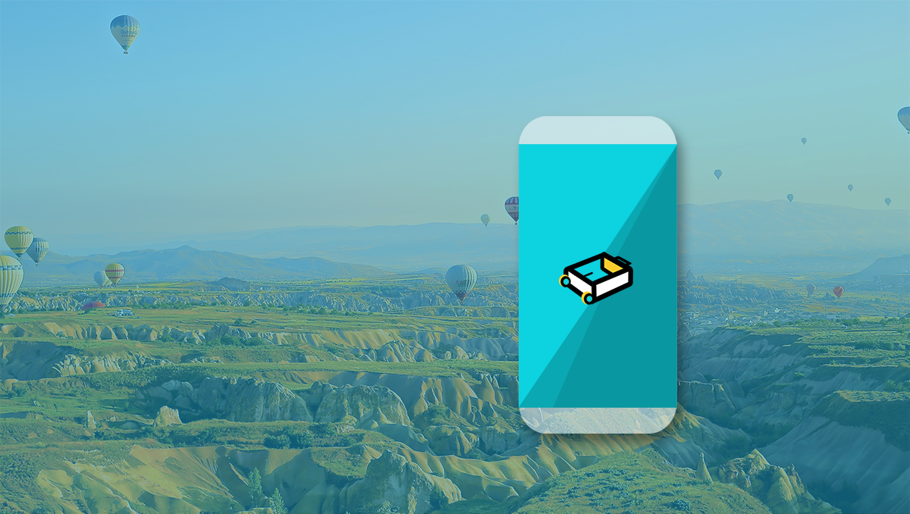

WHAT I MADE
STORY-
-
- 짐싸기가 점점 귀찮아졌던 '나'
- 매일 캐리어와 함께 했던 20대의 나날들.. 처음 짐을 쌀 때는 어떻게 짐을 싸야하나 막막했던 기억이 납니다.
짐 싸기 장인(?)이 되고 나서는 수월하게 싸기는 하지만 점점 짐 싸는 일이 귀찮아지면서 꼭 필요한 물품을 하나씩
챙기지 못하는 나를 발견하기도 했습니다. 그래서, 짐 싸기 초보자에게는 다른 여행자들의 정보를 제공하고
프로 짐쌈러에게는 한번 만든 짐 목록 리스트를 계속 재생성하여 사용 가능한 앱이 만들어지면 좋겠다고 생각했습니다.